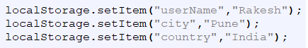
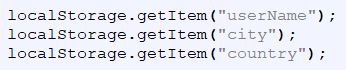

With web storage, web applications can store data locally within the user's browser.
Before HTML5, application data had to be stored in cookies, included in every server request. Web storage is more secure, and large amounts of data can be stored locally, without affecting website performance.
HTML5 web storage provides two objects for storing data on the client:
The localStorage object stores the data with no expiration date. The data will not be deleted when the browser is closed, and will be available the next day, week, or year.

The sessionStorage object is equal to the localStorage object, except that it stores the data for only one session. The data is deleted when the user closes the specific browser tab.
